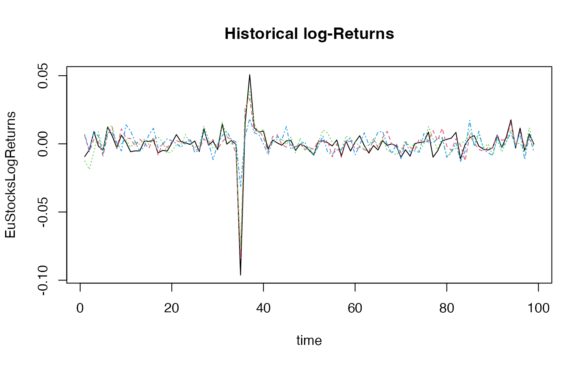

Contents:
0 - Install ahead
1 - Get and transform data
2 - Risk-neutralize simulations
3 - Visualization
ahead
ahead is released under the BSD Clear license. Here’s
how to install the R version of the package:
1st method: from R-universe
In R console:
options(repos = c(
techtonique = 'https://techtonique.r-universe.dev',
CRAN = 'https://cloud.r-project.org'))
install.packages("ahead")2nd method: from Github
In R console:
devtools::install_github("Techtonique/ahead")Or
remotes::install_github("Techtonique/ahead")Using ahead:
data(EuStockMarkets)
EuStocks <- ts(EuStockMarkets[1:100, ],
start = start(EuStockMarkets),
frequency = frequency(EuStockMarkets))
EuStocksLogReturns <- ahead::getreturns(EuStocks, type = "log")
print(head(EuStocksLogReturns))## Time Series:
## Start = c(1991, 131)
## End = c(1991, 136)
## Frequency = 260
## DAX SMI CAC FTSE
## 1991.500 -0.009326550 0.006178360 -0.012658756 0.006770286
## 1991.504 -0.004422175 -0.005880448 -0.018740638 -0.004889587
## 1991.508 0.009003794 0.003271184 -0.005779182 0.009027020
## 1991.512 -0.001778217 0.001483372 0.008743353 0.005771847
## 1991.515 -0.004676712 -0.008933417 -0.005120160 -0.007230164
## 1991.519 0.012427042 0.006737244 0.011714353 0.008517217
ym <- c(0.03013425, 0.03026776, 0.03040053, 0.03053258, 0.03066390, 0.03079450, 0.03092437)
freq <- frequency(EuStocksLogReturns)
(start_preds <- tsp(EuStocksLogReturns)[2] + 1 / freq)## [1] 1991.881## Time Series:
## Start = c(1991, 230)
## End = c(1991, 236)
## Frequency = 260
## [1] 0.03013425 0.03026776 0.03040053 0.03053258 0.03066390 0.03079450 0.03092437
obj <- ahead::ridge2f(EuStocksLogReturns, h = 7L,
type_pi = 'bootstrap',
B = 10L, ym = ym)
rowMeans(obj$neutralized_sims$CAC)## [1] 0.03013425 0.03026776 0.03040053 0.03053258 0.03066390 0.03079450 0.03092437
print(ym)## Time Series:
## Start = c(1991, 230)
## End = c(1991, 236)
## Frequency = 260
## [1] 0.03013425 0.03026776 0.03040053 0.03053258 0.03066390 0.03079450 0.03092437
rowMeans(obj$neutralized_sims$DAX)## [1] 0.03013425 0.03026776 0.03040053 0.03053258 0.03066390 0.03079450 0.03092437
print(ym)## Time Series:
## Start = c(1991, 230)
## End = c(1991, 236)
## Frequency = 260
## [1] 0.03013425 0.03026776 0.03040053 0.03053258 0.03066390 0.03079450 0.03092437
par(mfrow = c(2, 2))
matplot(EuStocksLogReturns, type = 'l',
main = "Historical log-Returns", xlab = "time")
plot(ym, main = "fake spot curve",
xlab = "time to maturity",
ylab = "yield",
ylim = c(0.02, 0.04))
matplot(obj$neutralized_sims$DAX, type = 'l',
main = "simulations of \n predicted DAX log-returns ('risk-neutral')",
ylim = c(0.02, 0.04),
ylab = "log-returns")
ci <- apply(obj$neutralized_sims$DAX, 1, function(x) t.test(x)$conf.int)
plot(rowMeans(obj$neutralized_sims$DAX), type = 'l', main = "average predicted \n DAX log-returns ('risk-neutral')", col = "blue",
ylim = c(0.02, 0.04),
ylab = "log-returns")
lines(ci[1, ], col = "red")
lines(ci[2, ], col = "red")